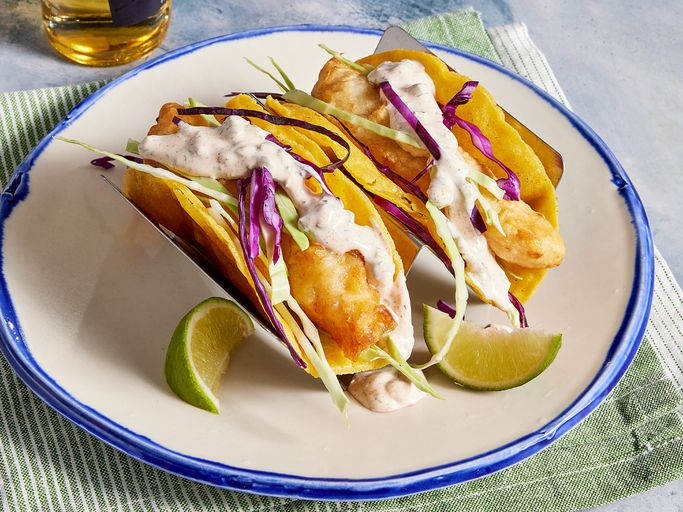

Mexican Tacos

Make with 1 or 2 pounds of ground beef. You can use two cans of diced tomatoes
with green chilies depending on your taste. Enjoy!
ingredients
- 1 pound ground beef
- 1 envelope taco seasoning mix
- 1 (10 ounce) can diced tomatoes with green chile peppers
- 1 (15 ounce) can ranch-style beans
- 1 (14.5 ounce) package nacho-flavor tortilla chips
- 1 cup package nacho flavor tortilla chips
steps
- Cook ground beef in a skillet over medium heat
- Drain excess grease and mix in taco seasoning
- Place a large handful of tortilla chips on a serving dish
Home